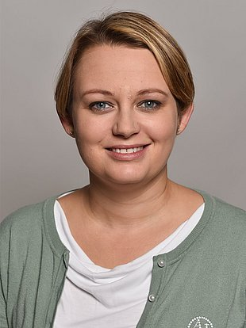

Professional Bio
Prof. Dr. Beatrice Paoli is Institutsleiterin of the Laboratory for Web Science (LWS) and Fachbereichsleiterin Data Science at Fernfachhochschule Schweiz (FFHS).
She contributes to the strategic and scientific development of data science activities across research, teaching, and applied innovation at FFHS.

Telefon
+41 44 512 09 28
E-Mail
beatrice.paoli@ffhs.ch
Arbeitsort
Zuerich
Arbeitstage
Mo Di Mi Do Fr
FFHS Profile
ffhs.ch/.../paoli-beatrice
Archive Project Icons